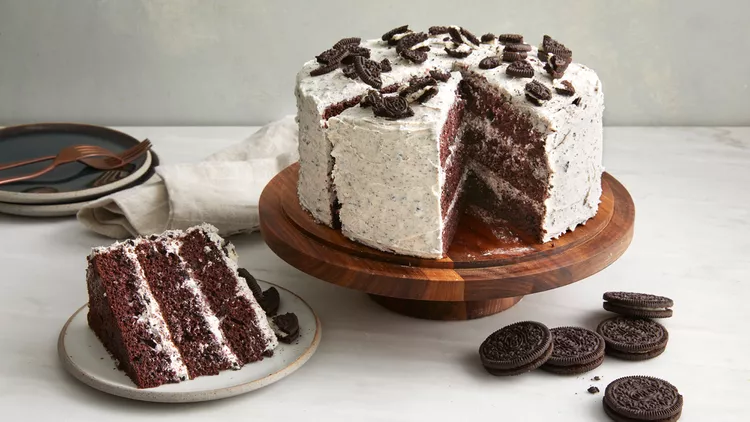

Cookies and Cream Cake

Ingredients
- 2 cups all-purpose flour
- 1 cup granulated sugar
- 1 cup buttermilk
- 1/2 cup unsalted butter, softened
- 3 large eggs
- 1 tsp vanilla extract
- 1 tsp baking powder
- 1/2 tsp baking soda
- 1/2 tsp salt
- 12 Oreo cookies, crushed
Instructions
- Preheat oven to 350°F (175°C). Grease and flour two 9-inch round cake pans.
- In a large mixing bowl, cream together butter and sugar until light and fluffy.
- Add eggs, one at a time, beating well after each addition. Stir in vanilla extract.
- In a separate bowl, combine flour, baking powder, baking soda, and salt.
- Gradually add the dry ingredients to the creamed mixture, alternating with buttermilk. Mix until smooth.
- Fold in crushed Oreo cookies.
- Divide batter evenly between prepared cake pans.
- Bake for 25 to 30 minutes, or until a toothpick inserted into the center comes out clean.
- Remove cakes from oven and let cool in pans for 10 minutes. Then transfer to wire racks to cool completely.